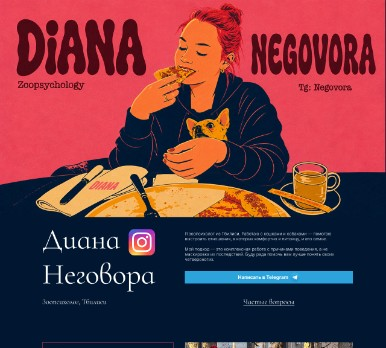

Offline консультация
150 ₾
Встреча у вас дома в Тбилиси: разбор запроса, практика и рекомендации в привычной для питомца обстановке.
- Около 1,5 часа на месте
- Поддержка в чате до следующей встречи или неделю после
- Файл с планом и рекомендациями

Работаю с кошками и собаками: разбираем причины поведения и выстраиваем спокойные, предсказуемые отношения между вами и питомцем — без «маскировки» симптомов и лишнего стресса для животного.
Помогаю подготовиться к появлению питомца, пройти кризисы адаптации и найти решения для нежелательных привычек дома и на улице.
Написать в TelegramСамое популярное
100 ₾
130 ₾
Созвон с разбором ситуации: вы присылаете видео, где видно суть запроса; после встречи получаете план и рекомендации файлом.

150 ₾
Встреча у вас дома в Тбилиси: разбор запроса, практика и рекомендации в привычной для питомца обстановке.
80 ₾
Поисковая дисциплина: теория и практика, домашнее задание и памятка по материалу занятия.
40 ₾
Один сфокусированный вопрос в чате без полной «диагностической» консультации — ответ с ориентирами и шагами.
Подготовка к щенку или взрослой собаке, туалет, адаптация из приюта, конфликты со вторым животным, страхи, тяга на поводке, лай, агрессивные сигналы, скука и «шалости» — в том числе у кошек: график, границы, стресс от бытовых изменений.
Удобнее всего в Telegram: как к вам обращаться, город, вид питомца и кратко, что происходит и чего вы хотите добиться к концу работы. По возможности приложите короткое видео с ситуацией — так мы быстрее сфокусируемся на главном.
Если это не формат «один вопрос», часто закладывают несколько сессий: первая — картина и план, дальше — корректировка по вашим реальным условиям. Точный темп зависит от случая и того, насколько стабильно вы можете внедрять рекомендации между встречами.
Нет — также с кошками. Суть та же: смотрим на потребности животного, контекст дома, привычки семьи и ищем решения без жёстких «методов давления».
Не узнали свой случай в списке — напишите в Telegram коротко, что происходит: разберём, какой формат вам подойдёт сейчас.